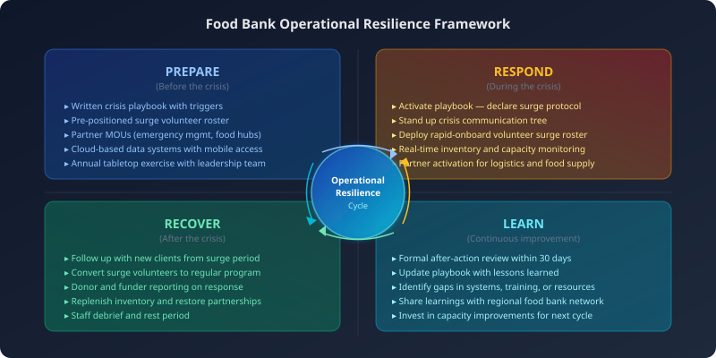

Food banks exist at the intersection of structural poverty and acute crisis. The same organization that provides steady-state monthly assistance to 2,000 families may need to serve 5,000 in a single week when a regional employer closes, a hurricane disrupts supply chains, or a federal policy change eliminates nutrition assistance for thousands overnight. The difference between food banks that navigate these surges effectively and those that are overwhelmed often comes down to preparation made months or years before the crisis arrives.
Resilience is not a trait some organizations are born with. It is a set of deliberate choices — about systems, relationships, data, and culture — that compound over time into genuine capacity to absorb shocks without breaking.
Understanding the Difference Between Crisis and Steady-State Operations

Steady-state food bank operations are optimized for predictability. Staff know the schedule, volunteers know their roles, inventory levels are calibrated to expected demand, and partner relationships operate on established rhythms. Crisis operations require a completely different mode: rapid intake of unusual resources, deployment of unfamiliar volunteers, communication to clients who do not know you exist, and decision-making in conditions of incomplete information.
The organizations that struggle most during crises are those that try to run crisis operations on steady-state infrastructure. They find that their intake system cannot scale, their volunteer communication is too slow, their partner contacts are out of date, and their reporting cannot keep pace with funder questions. Building resilience means explicitly designing for surge capacity — not hoping that normal systems will stretch.
Building Your Crisis Playbook
A crisis playbook is a documented, tested set of protocols for the most likely emergency scenarios your organization faces. For most food banks, this includes at least three scenarios: a demand surge from economic or policy shock, a supply chain disruption that limits food availability, and a facility or operational disruption that limits your capacity to distribute.
For each scenario, the playbook should define decision triggers (at what point does surge protocol activate?), communication trees (who notifies whom, through what channels, in what order?), resource pre-positioning (what resources are staged in advance?), and partner activation (which relationships are called upon, and what do they provide?). The playbook is not a document to write once and file — it requires regular testing through tabletop exercises and updating after each real event.
Surge Capacity: Volunteers, Facilities, and Logistics
Volunteer surge capacity is often the binding constraint in a food bank crisis. Your existing volunteer pool is already committed; a crisis brings new, untrained volunteers who need rapid onboarding to be useful. Organizations that manage this well maintain a "crisis volunteer" roster — people who have completed basic orientation and can be activated on short notice — separate from their regular volunteer program. Partnerships with corporate volunteer programs, faith communities, and university service organizations are also valuable, as these groups can mobilize quickly and bring their own coordination structure.
Facility planning for surge means knowing in advance which additional spaces you can access. Many food banks have informal relationships with school gymnasiums, parking lots, or partner agency warehouses that can accommodate drive-through distributions or additional storage. Making these arrangements formal — with documented agreements before an emergency — means you are not negotiating logistics under pressure.
Logistics partnerships with regional food banks, food hubs, and emergency management agencies provide access to food resources beyond your normal supply. These relationships take time to develop and require maintenance. A food bank director who has never met their county emergency management coordinator is less prepared than one who has attended a joint planning exercise.
Data Systems That Give You Real-Time Visibility
During a crisis, situational awareness is a operational capability. Knowing how many families you have served so far today, how much food remains in each category, which distribution sites are under capacity, and which volunteer slots are still open — and knowing these things in real time — dramatically improves decision quality. Coordinators who rely on end-of-day manual counts are always operating on yesterday's picture.
Cloud-based systems with mobile access are particularly valuable in crisis conditions, when staff may be operating from multiple sites or supporting distributions in unfamiliar locations. A Salesforce instance with a mobile-accessible dashboard, for example, gives executive directors the same operational picture whether they are at headquarters or in the field. Automated alerts — triggered when inventory drops below a threshold, when a distribution site reports a long queue, or when volunteer check-ins are unexpectedly low — reduce the burden of constant manual monitoring.
Post-Crisis Recovery and Learning
The period immediately following a crisis is as important as the crisis itself. Clients who first encountered your organization during an emergency need follow-up to understand ongoing services. Volunteers who stepped up during the surge, if properly thanked and engaged, can become long-term program volunteers. Funders and community partners who saw your organization perform under pressure have an opportunity to deepen their investment.
The formal after-action review — a structured examination of what worked, what did not, and what to change — is the mechanism that converts experience into institutional learning. Organizations that conduct rigorous reviews after every significant event steadily improve their crisis response capacity. Those that do not tend to repeat the same improvisations event after event, relying on individual heroics rather than organizational systems.
Resilience is ultimately a choice about how an organization invests its non-crisis time. Every playbook document written, every partner relationship cultivated, every data system built, and every after-action review completed is an investment in the organization's capacity to serve its community when that community needs it most.